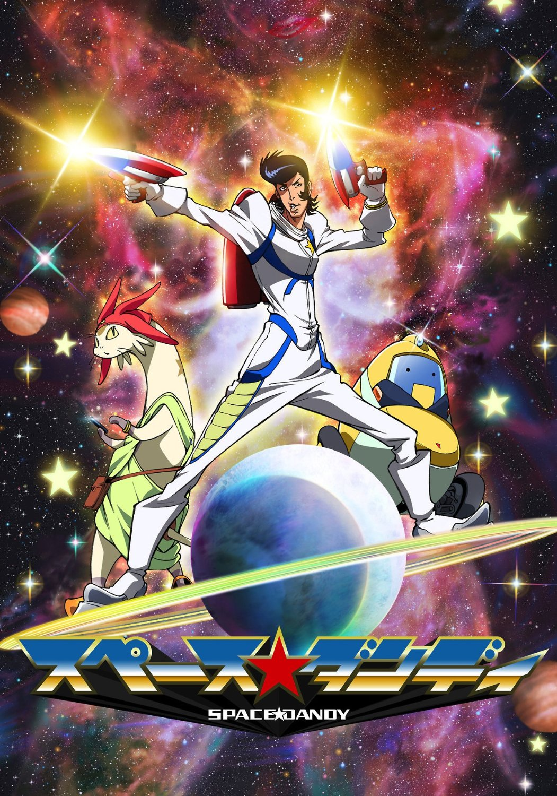

2016.03
About
Space★Dandy
Dandy, an alien hunter who is "a dandy guy in space"
SF
JP animeSpace opera series!
Space Dandy is an easygoing and forgetful young man working as an alien hunter whose job is to discover new alien life forms across the galaxy and have them registered with the Space Alien Registration Center. He is the captain of the Aloha Oe , his personal spaceship.
A robot that resembles and also operates as a vacuum cleaner. QT boasts being more intelligent than its fellow crewmates, but its usefulness is stymied by problems caused by its outdated hardware such as memory shortages and battery outages.
A dimwitted cat-like Betelgeusian.His real name is Me#$%* .
B----Baka
B----Bonkura
P----Ponkotsu
Space Dandy is a 2014 Japanese anime series produced by Bones. The series follows Dandy, an alien hunter who is "a dandy guy in space," in search for aliens with his robot assistant QT and a cat-like alien named Meow.The anime has been licensed by Funimation in North America, Madman Entertainment in Australia and by Anime Limited in the United Kingdom. The series premiered in the United States before Japan on January 4, 2014 at 11:30pm on Adult Swim's Toonami block. The series began airing in Japan on Tokyo MX, followed by TV Osaka, TV Aichi, BS Fuji and AT-X. The series is also simulcasted in South East Asia at the same time as Japan on Animax Asia. The series broadcasts in Australia on SBS 2 starting 3 October 2015. The manga is licensed in English by Yen Press. The 13 episodes of the first season aired from January to March 2014, and the second season premiered on July 5, 2014.
space dandy
BakaBakaBaka............................B
BonkuraBonkura..........................B
PonkotsuPonkotsu........................P
BBP BBP BBP BBP BBP BBP BBP BBP BBP BBP